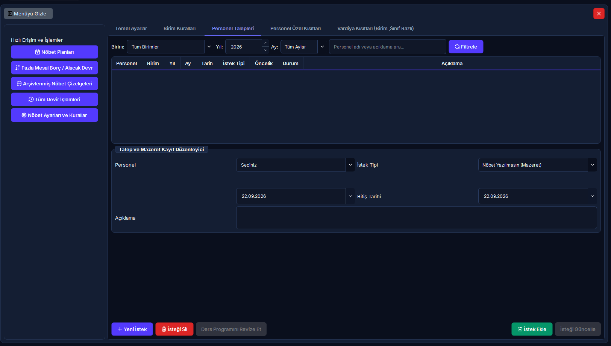

Personel Talepleri, Mazeretler & Onay Yönetimi
Personelin nöbet istemediği mazeret günleri, özel nöbet yazılma istekleri, lisansüstü eğitim ders kısıtları ve isteğe bağlı fazla mesai tavan taleplerinin birim amirince incelenmesi, onaylanması veya reddedilmesi sürecini kapsar.
Hızlı Reçete: Personel Taleplerinin Yönetimi ve Onay Akışı
Mazeret toplama, amir değerlendirmesi, onay/red kararı ve nöbet dağıtım motoru entegrasyonu
Personelin haklı mazeret ve tercihlerinin kurumsal adalet zedelenmeden nöbet dağıtım algoritmasına iletilmesi.
Dönem ayını seçin, mazeretleri inceleyin, uygun olanları [İsteği Onayla], sakıncalı olanları gerekçe belirterek [İsteği Reddet] ile sonuçlandırın.
Sadece amir onayından geçen talepler Nöbet Dağıtım Motoruna kısıt olarak aktarılır; reddedilen veya askıdaki talepler dikkate alınmaz.
🔍 5N1K: Personel Talepleri Arayüz Bileşenleri ve Saha Kuralları
Ekranda gördüğünüz butonlar, kutular ve listelerin görevleri, kullanım kuralları ve sistemdeki etkileri.
| NE? (Arayüzdeki İsim) | NEDEN? (Amacı) | NASIL? (Çalışma Mantığı) | NE ZAMAN? | KİM? |
|---|---|---|---|---|
| Dönem Yılı & Dönem Ayı Seçimi | Talepleri sadece planlanacak olan nöbet ayına filtrelemek ve geçmiş aylarla karışmasını önlemek. | Açılır kutudan ay ve yıl değiştirildiğinde liste anında filtrelenir; sadece ilgili ayın talepleri ekrana gelir. | İncelemeye başlarken. | Birim Amiri, Planlayıcı |
| Birim / Departman Filtresi | Çok birimli hastanelerde sadece sorumlu olunan servisin mazeretlerine odaklanmak. | Birim seçildiğinde personel listesi ve mazeret tablosu seçilen birimin kadrosuna göre sınırlandırılır. | Departman incelemelerinde. | Birim Sorumlusu |
| Talep Türü Açılır Kutusu | Personelin talebini kategorize ederek algoritmanın doğru kısıtı kurmasını sağlamak. | 4 seçenek sunar: Nöbet Yazılmasın (Mazeret), Nöbet Yazılsın (İstek), Eğitim Kısıtı (Ders Programı), Fazla Mesai Talebi (Aylık Üst Sınır). | Talep girerken / incelerken. | Personel / Birim Amiri |
| Başlangıç Tarihi & Bitiş Tarihi | Mazeretin veya nöbet talebinin geçerli olacağı takvim aralığını kesinleştirmek. | Tek günlük taleplerde iki kutu aynı güne ayarlanır; çok günlük kongre/ders durumlarında aralık seçilir. | Tarih tanımlarken. | Talep Eden / Onaylayan |
| Tercih Edilen / İstenmeyen Nöbet Türü | Personelin gün bazında belirli bir vardiyayı (Örn: Gece nöbeti istememe veya sadece Gündüz 8-16 isteme) belirtmesi. | Birimde tanımlı slotlar açılır listede gelir; "Tüm Slotlar" seçilirse personelin o gün hiçbir nöbete atanmaması sağlanır. | Belirli vardiya mazeretlerinde. | Personel |
| Gerekçe / Talep Açıklaması Kutusu | Amirin kararı verirken talebin meşruiyetini ve dayanağını görebilmesini temin etmek. | Serbest metin alanıdır; kongre katılımı, sınav belgesi veya ailevi mazeret gibi detaylar yazılır. | Talep oluşturulurken. | Personel |
| İsteği Onayla Butonu (Yeşil) | Seçili personelin talebini resmen geçerli kılarak nöbet dağıtım motoruna yetkilendirmek. | Talebin durumu "Onaylandı" haline gelir; satır yeşil renkle vurgulanır ve nöbet dağıtım kısıt tablosuna anında yansır. | Talep uygun görüldüğünde. | Birim Amiri / Süpervizör |
| İsteği Reddet Butonu (Kırmızı) | Hizmeti aksatacak, aynı güne aşırı yığılma yaratan veya haksız talepleri iptal etmek. | Talebin durumu "Reddedildi" olarak güncellenir; gerekirse açıklama notu düşülür; nöbet dağıtım motoru bu talebi tamamen yok sayar. | Talep reddedildiğinde. | Birim Amiri |
| Personel İstek ve Mazeret Listesi Tablosu | İlgili ay için toplanan tüm istekleri, personelleri, tarihleri, durumları ve gerekçeleri toplu sergilemek. | Tabloda tek bir satıra tıklandığında üst form otomatik dolar ve [İsteği Onayla] / [İsteği Reddet] butonları aktifleşir. | Tüm inceleme sürecinde. | Yönetici, Planlayıcı |
🔄 Personel Nöbet Talebi ve Onay Süreç Şeması
Personelin talep girişinden birim amirinin değerlendirmesine ve Nöbet Dağıtım Motoruna aktarımına kadar uçtan uca akış.
(Mazeret, Nöbet İsteme, Eğitim, FM)"] --> B["Talep Havuzuna Kayıt
(Durum: Beklemede / Sarı)"] B --> C{"Birim Amiri İncelemesi
(Servis İhtiyacı & Çakışma Kontrolü)"} C -->|"Hizmete Engel Yok"| D["[İsteği Onayla]
(Durum: Onaylandı / Yeşil)"] C -->|"Aynı Güne Aşırı Yığılma / Yetersiz Kadro"| E["[İsteği Reddet]
(Durum: Reddedildi / Kırmızı)"] D --> F["Nöbet Dağıtım Motoru
(Kısıt Olarak Entegre Edilir)"] E --> G["Dağıtım Motoru Tarafından Yok Sayılır
(Personele Normal Nöbet Yazılabilir)"] F --> H["Nihai Aylık Nöbet Çizelgesi"]
🖥️ Arayüz Yerleşimi ve Saha Kullanım Görünümü
RADPYS masaüstü arayüzünde "Personel İstekleri" sekmesinin yerleşimi ve onay kontrolleri.

[Ekran Görüntüsü: nobet_ayarlar_main.png - Personel İstekleri Sekmesi]Tabloda herhangi bir talebe tıklandığında alttaki [İsteği Onayla] ve [İsteği Reddet] butonları otomatik olarak aktif hale gelir. Seçim yapılmadığında butonlar tıklanamaz.
Mazeret onaylandığında nöbet dağıtım motoru bu personeli seçili gün ve saat aralığında kesinlikle nöbete yazmaz. Özel nöbet isteği onaylandığında ise personeli o slota yüksek öncelikle yerleştirir.